Update 7/6/2022: Fixed a code discrepancy between the blog post and the GitHub repository.
Overview
This post demonstrates how to play and view videos inside Unity from both video files and a webcam. We’ll later perform pose estimation on individual frames while the video is playing. We can gauge the model’s accuracy by comparing the estimated key point locations to the source video.
Create the Video Player
To start, we will create a new GameObject to play and view a video feed.
Create the Video Screen
We will use a Quad object for the screen. Right-click an empty space in the Hierarchy tab. Select the 3D Object section and click Quad. We can just name it VideoScreen.
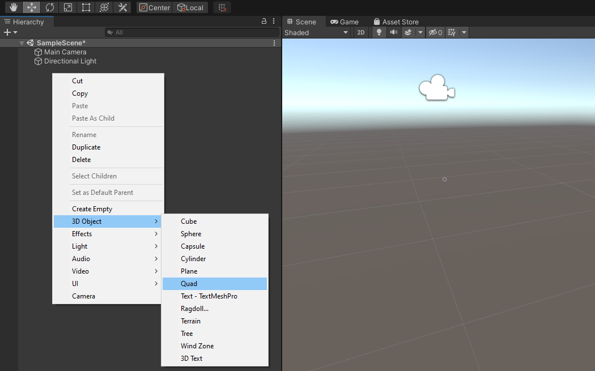
Since we are only working in 2D, we can switch the scene to 2D view by clicking the 2D button in the scene tab.
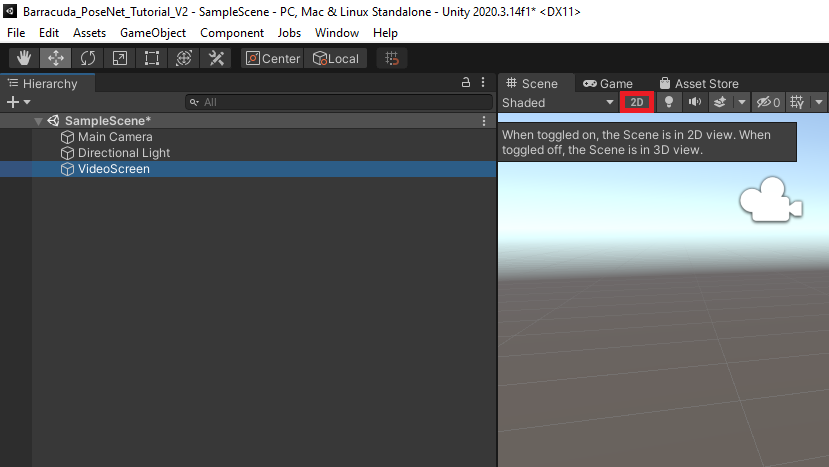
This will remove perspective from the scene view and align it with the VideoScreen.
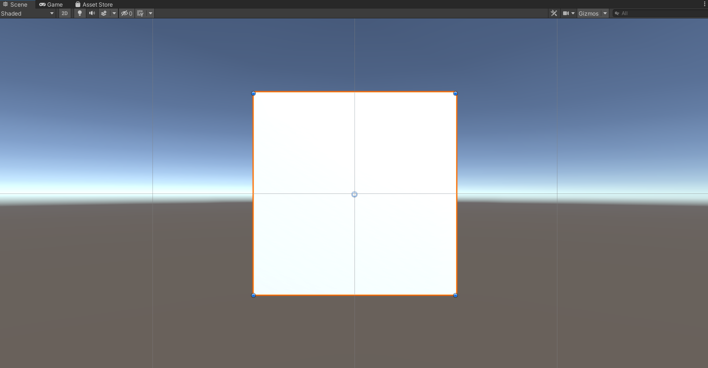
We will be updating the VideoScreen dimensions in code based on the resolution of the video or webcam feed.
Add Video Player Component
Unity has a Video Player component that provides the functionality to attach video files to the VideoScreen. With the VideoScreen object selected in the Hierarchy tab, click the Add Component button in the Inspector tab.
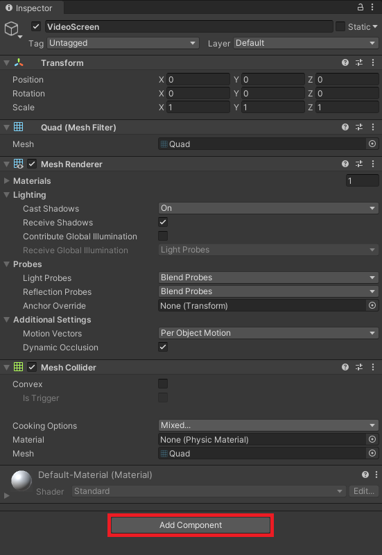
Type video into the search box and select Video Player from the search results.
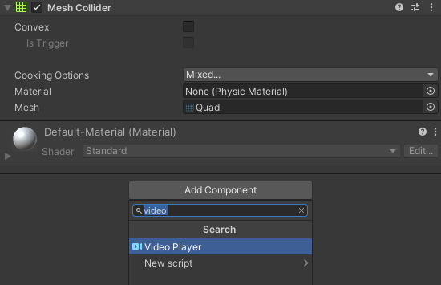
Assign Video Clip
Video files can be assigned by dragging them from the Assets section into the Video Clip spot in the Inspector tab. We will start with the pexels_boardslides file.
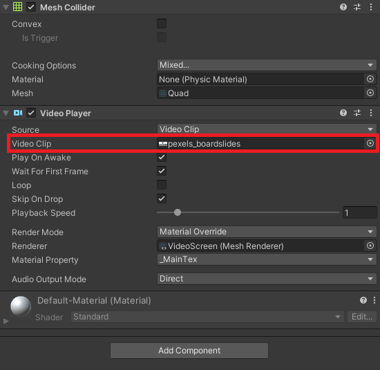
Make the Video Loop
Tick the Loop checkbox in the Inspector tab to make the video repeat when the project is running.
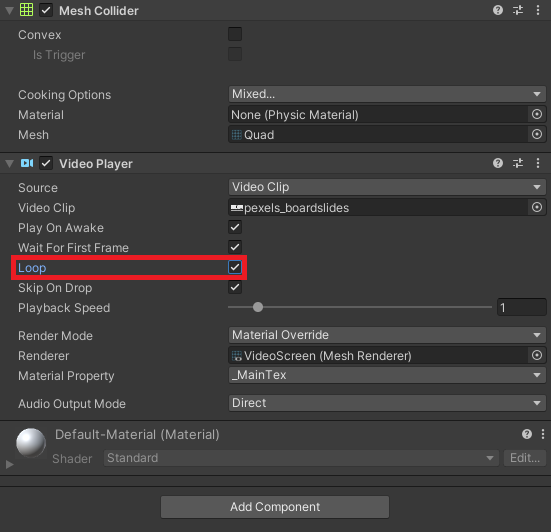
Create PoseEstimator Script
We will be adjusting both the VideoScreen and Main Camera objects in the script where the PoseNet model will be executed.
Create a new folder in the Assets section and name it Scripts. Enter the Scripts folder and right-click an empty space. Select C# Script in the Create submenu and name it PoseEstimator.
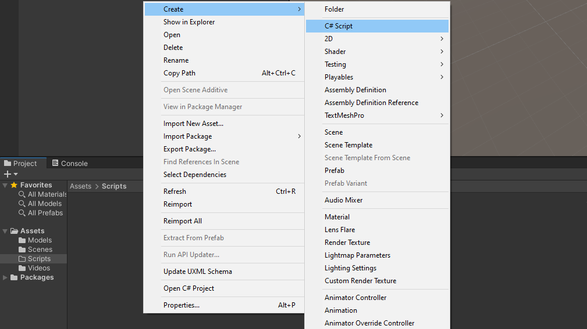
Double-click the new script to open it in the code editor.
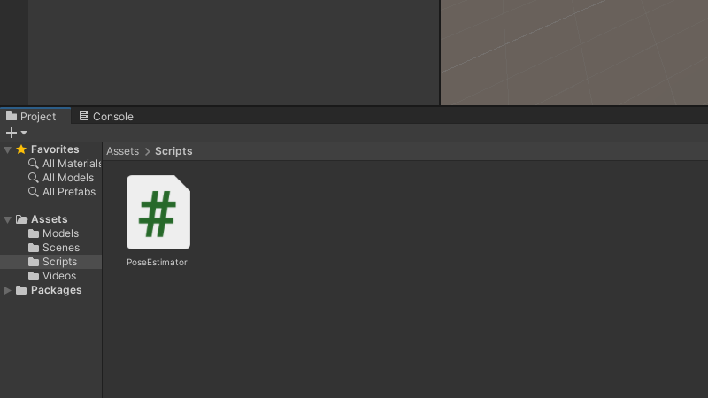
Add Required Namespace
We first need to add the UnityEngine.Video namespace to access the functionality for the Video Player component. Add the line using UnityEngine.Video; at the top of the script.
using System.Collections;using System.Collections.Generic;using UnityEngine;using UnityEngine.Video;
Define Public Variables
We can specify a desired resolution and framerate for webcams in Unity. If the provided resolution and framerate is not supported by the hardware, Unity will use a default resolution.
We will specify the desired webcam resolution using a publicVector2Int variable called webcamDims. Set the default values to 1280x720.
Next, create a publicint variable called webcamFPS and give it a default value of 60.
We will use a publicbool variable to toggle between using a video file or webcam as input for the model. Set the default value to false as we will be starting with a video file.
Lastly, create a publicTransform variable called videoScreen. We will use this variable to access the VideoScreen object and its Video Player component.
We need a privateWebCamTexture variable to access the video feed from a webcam.
We will store the final dimensions from either the video or webcam feed in a private Vector2Int variable called videoDims.
The last variable we need is a privateRenderTexture variable called videoTexture. This will store the pixel data for the current video or webcam frame.
// Live video input from a webcamprivate WebCamTexture webcamTexture;// The dimensions of the current video sourceprivate Vector2Int videoDims;// The source video textureprivate RenderTexture videoTexture;
Create InitializeVideoScreen() Method
We will update the position, orientation, and size of the VideoScreen object in a new method called InitializeVideoScreen. The method will take in width and height value along with a bool to indicate whether to mirror the screen. When using a webcam, we need to mirror the VideoScreen object so that the user’s position is mirrored on screen (e.g. their right side is on the right side of the screen).
First, we will set the video player component to render to a RenderTexture and set videoTexture as the target texture.
When mirrorScreen is set to true the VideoScreen will be rotated 180 around the Y-Axis and scaled by -1 along the Z-Axis.
The default shader assigned to the VideoScreen object needs to be replaced with an Unlit/Texture shader. This will remove the need for the screen to be lit by an in-game light.
Important: By default, the Unlit/Texture shader is not included in project builds. We need to manually include it in the project settings
Open the Edit menu in the Unity Editor and select Project Settings
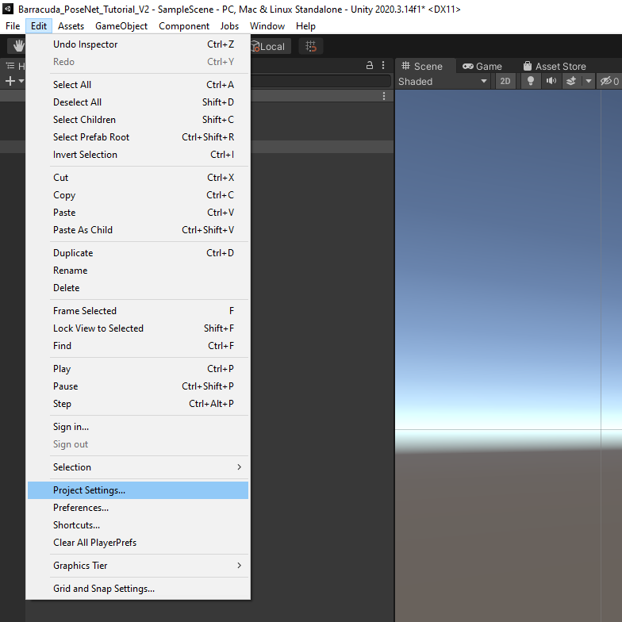
In the Project Settings window, select the Graphics submenu and scroll down to the Always Included Shaders section. Update the Size value to add an extra Element spot.
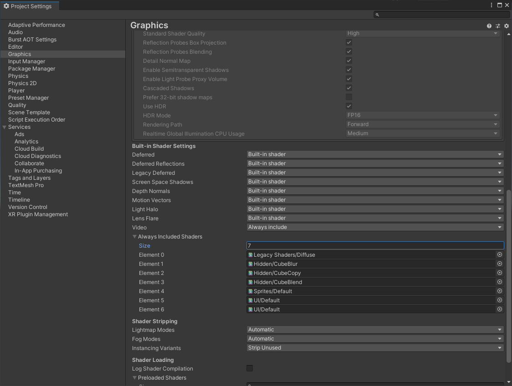
Select the new bottom shader spot.
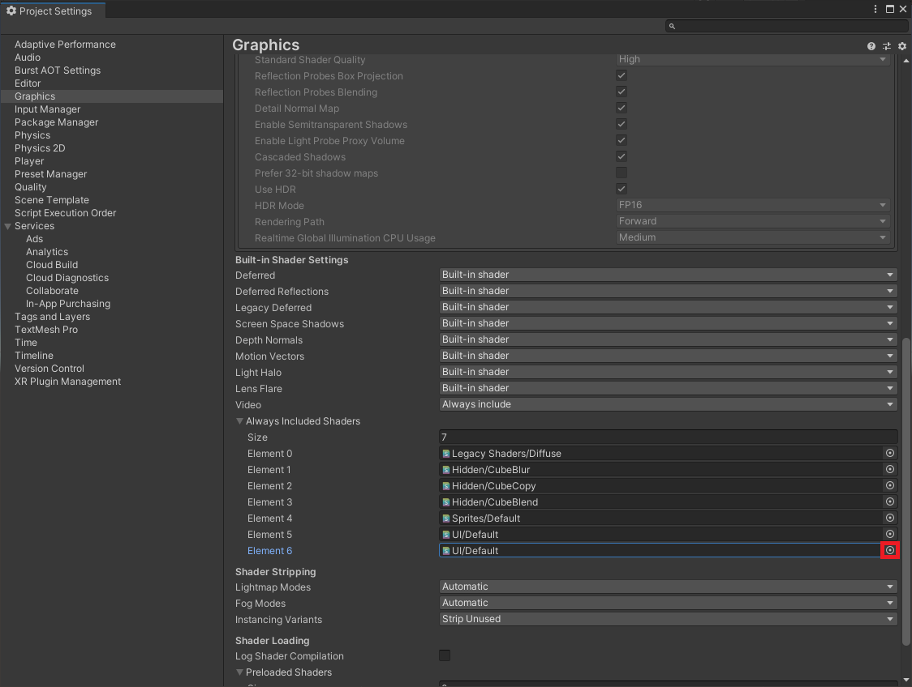
Type Unlit/Texture shader into the Select Shader window and select Unlit/Texture from the available options. We can then close the Select Shader window.
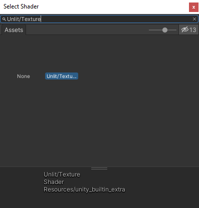
We will also need the Unlit/Color shader later in this series so repeat these steps to add it as well.
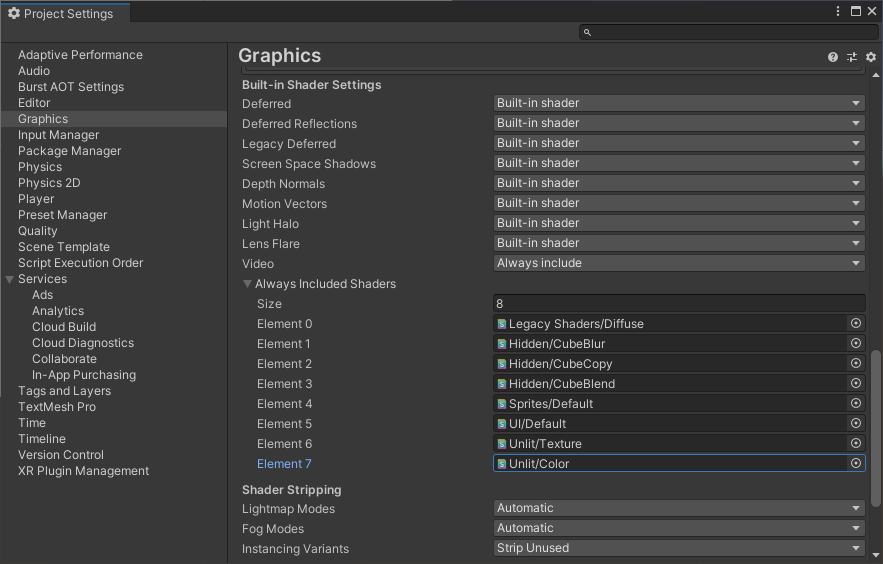
We will then assign the videoTexture created earlier as the texture for the VideoScreen. This will allow us to access to pixel data for the current video frame.
We can adjust the dimensions of the VideoScreen object by updating it’s localScale attribute.
The last step is to reposition the screen based on the the new dimensions, so that the bottom left corner is at X:0, Y:0, Z:0. This will simplify the process for updating the positions of objects with the estimated key point locations.
/// <summary>/// Prepares the videoScreen GameObject to display the chosen video source./// </summary>/// <param name="width"></param>/// <param name="height"></param>/// <param name="mirrorScreen"></param>privatevoidInitializeVideoScreen(int width,int height,bool mirrorScreen){// Set the render mode for the video player videoScreen.GetComponent<VideoPlayer>().renderMode= VideoRenderMode.RenderTexture;// Use new videoTexture for Video Player videoScreen.GetComponent<VideoPlayer>().targetTexture= videoTexture;if(mirrorScreen){// Flip the VideoScreen around the Y-Axis videoScreen.rotation= Quaternion.Euler(0,180,0);// Invert the scale value for the Z-Axis videoScreen.localScale=newVector3(videoScreen.localScale.x, videoScreen.localScale.y,-1f);}// Apply the new videoTexture to the VideoScreen Gameobject videoScreen.gameObject.GetComponent<MeshRenderer>().material.shader= Shader.Find("Unlit/Texture"); videoScreen.gameObject.GetComponent<MeshRenderer>().material.SetTexture("_MainTex", videoTexture);// Adjust the VideoScreen dimensions for the new videoTexture videoScreen.localScale=newVector3(width, height, videoScreen.localScale.z);// Adjust the VideoScreen position for the new videoTexture videoScreen.position=newVector3(width /2, height /2,1);}
Create InitializeCamera() Method
Once the VideoScreen has been updated, we need to resize and reposition the in-game camera. We will do so in a new method called InitializeCamera.
We can access the Main Camera object with GameObject.Find("Main Camera"). We will set the X and Y coordinates to the same as the VideoScreen position.
The camera also needs to be set to orthographic mode to remove perspective.
Lastly, we need to update the size of the camera. The orthographicSize attribute is actually the half size, so we need to divide videoDims.y (i.e. the height) by 2 as well.
/// <summary>/// Resizes and positions the in-game Camera to accommodate the video dimensions/// </summary>privatevoidInitializeCamera(){// Get a reference to the Main Camera GameObject GameObject mainCamera = GameObject.Find("Main Camera");// Adjust the camera position to account for updates to the VideoScreen mainCamera.transform.position=newVector3(videoDims.x/2, videoDims.y/2,-10f);// Render objects with no perspective (i.e. 2D) mainCamera.GetComponent<Camera>().orthographic=true;// Adjust the camera size to account for updates to the VideoScreen mainCamera.GetComponent<Camera>().orthographicSize= videoDims.y/2;}
Modify Start() Method
In the Start method, we will first check if useWebcam is set to true. If it is, we will first limit the target framerate to the same as the target framerate for the webcam. We will then initialize the webcamTexture with the specified resolution and framerate. We will also disable the Video Player component. Lastly, we will update the values for videoDims with the final dimensions for the webcamTexture.
If we are not using a webcam, we will instead update videoDims with the dimensions from the Video Player component.
Next, we need to initialize the videoTexture with the new dimensions and the ARGBHalf HDR texture format. We need to use an HDR texture format so that we can store color values outside the standard Unity range of [0,1]. The MobileNet version of the PoseNet model expects values to be in the range [-1,1] while the ResNet50 version expects values in the range [0,255].
We will then call the InitializeVideoScreen() and InitializeCamera() methods.
// Start is called before the first frame updatevoidStart(){if(useWebcam){// Limit application framerate to the target webcam framerate Application.targetFrameRate= webcamFPS;// Create a new WebCamTexture webcamTexture =newWebCamTexture(webcamDims.x, webcamDims.y, webcamFPS);// Start the Camera webcamTexture.Play();// Deactivate the Video Player videoScreen.GetComponent<VideoPlayer>().enabled=false;// Update the videoDims.y videoDims.y= webcamTexture.height;// Update the videoDims.x videoDims.x= webcamTexture.width;}else{// Update the videoDims.y videoDims.y=(int)videoScreen.GetComponent<VideoPlayer>().height;// Update the videoDims.x videoDims.x=(int)videoScreen.GetComponent<VideoPlayer>().width;}// Create a new videoTexture using the current video dimensions videoTexture = RenderTexture.GetTemporary(videoDims.x, videoDims.y,24, RenderTextureFormat.ARGBHalf);// Initialize the videoScreenInitializeVideoScreen(videoDims.x, videoDims.y, useWebcam);// Adjust the camera based on the source video dimensionsInitializeCamera();}
Modify Update() Method
For now, the only thing we need to do in the Update method is to “copy” the pixel data from webcamTexture to videoTexture when using a webcam.
// Update is called once per framevoidUpdate(){// Copy webcamTexture to videoTexture if using webcamif(useWebcam) Graphics.Blit(webcamTexture, videoTexture);}
Create PoseEstimator Object
With the required code completed, we just need to attach the script to a GameObject. Right-click an empty space in the Hierarchy tab and select Create Empty. Name the new object PoseEstimator.
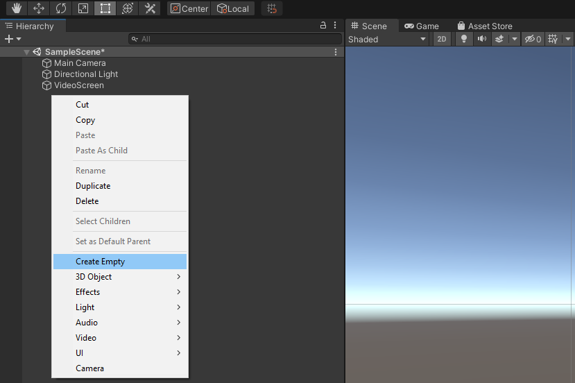
Attach PoseEstimator Script
With the PoseEstimator object selected in the Hierarchy tab, drag and drop the PoseEstimator script into the Inspector tab.
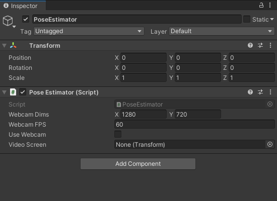
Assign VideoScreen Object
Drag and drop the VideoScreen object from the Hierarchy tab into the Video Screen spot in the Inspector tab.
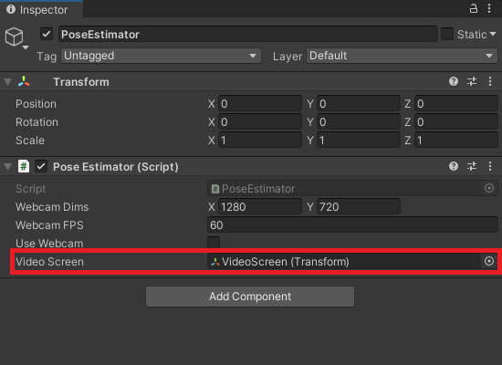
Test it Out
Now we can press the play button to test out the video player.
Note: By default the Aspect for the Game view is set to Free Aspect, so the VideoScreen might not fill the entire view.
Summary
We now have a video player that we can use to feed input to the PoseNet model. In the next post, we will implement the preprocessing steps for the PoseNet models.